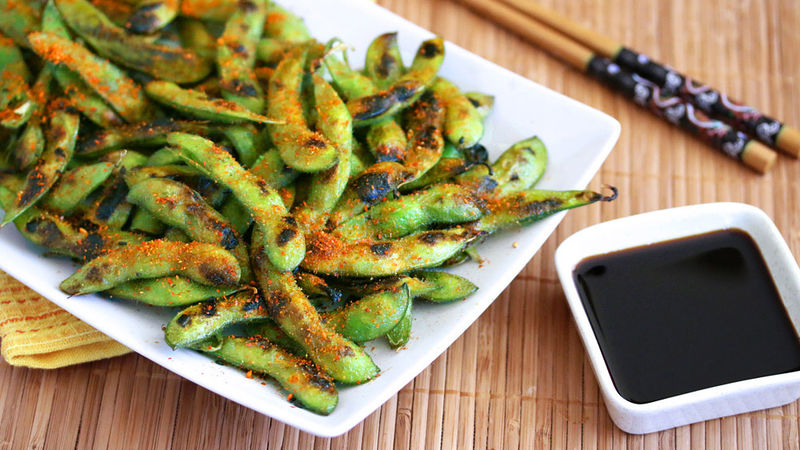

edamame

Steamed and salted soybean pods.
ingredients
1 lb frozen edamame,
1 tbsp sea salt.
instructions
Boil the edamame in salted water for 5-6 minutes,
drain and spinkle with sea salt,
serve warm.